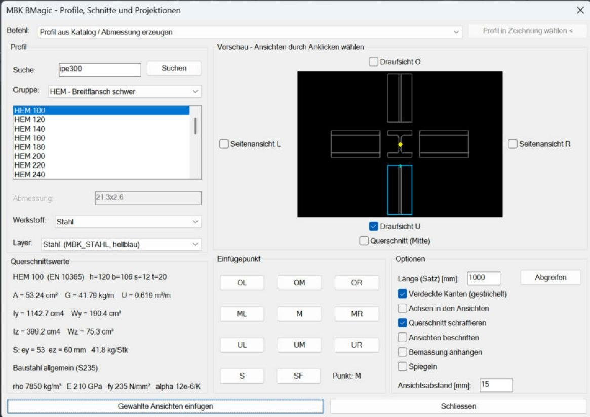
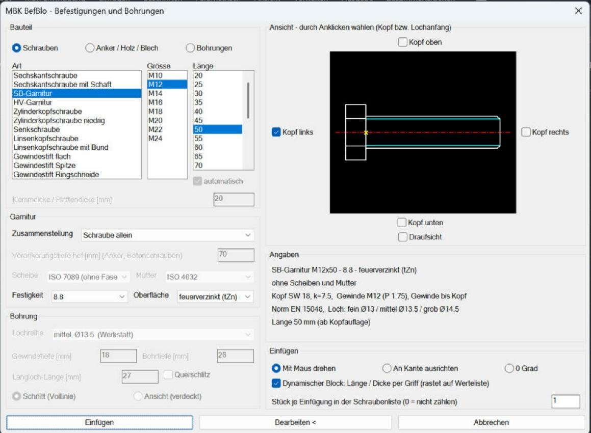
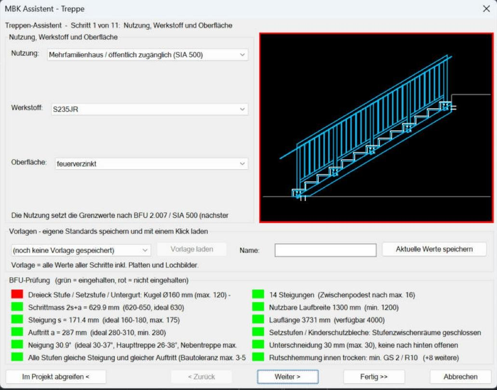
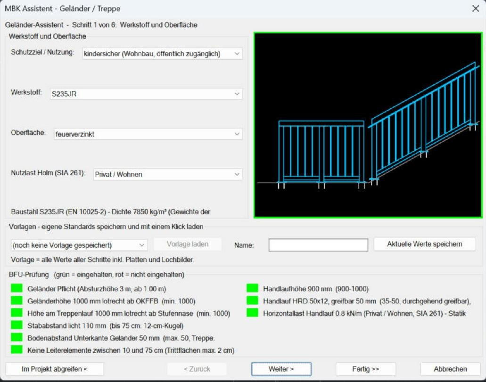
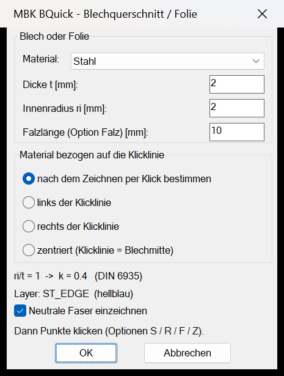
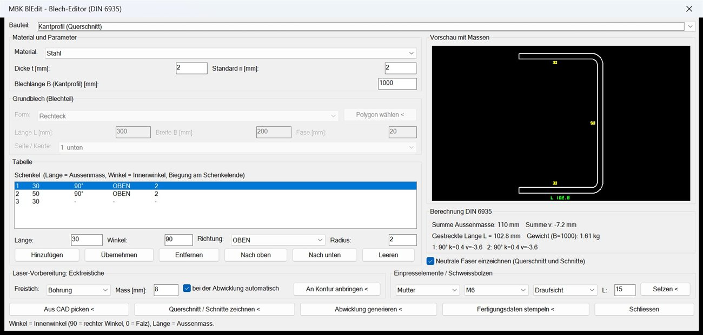
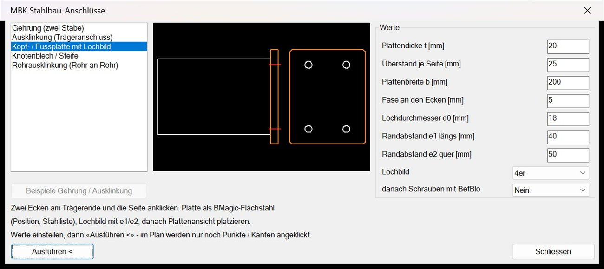
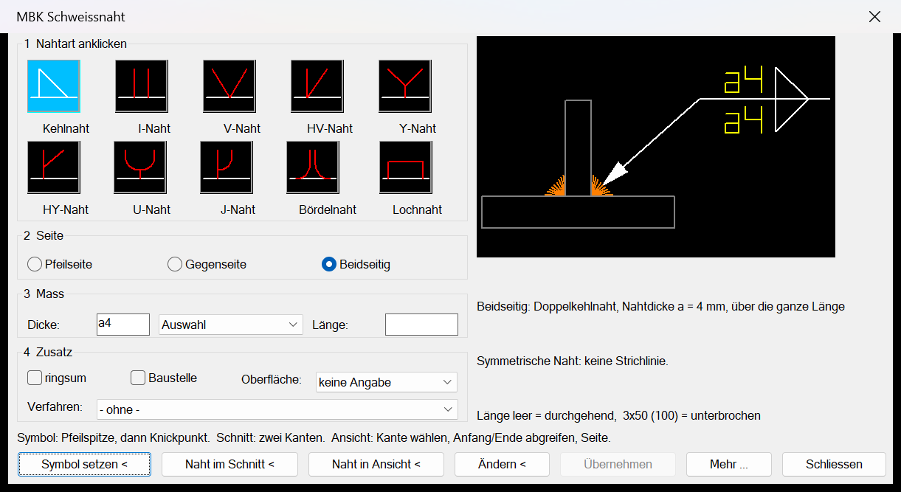
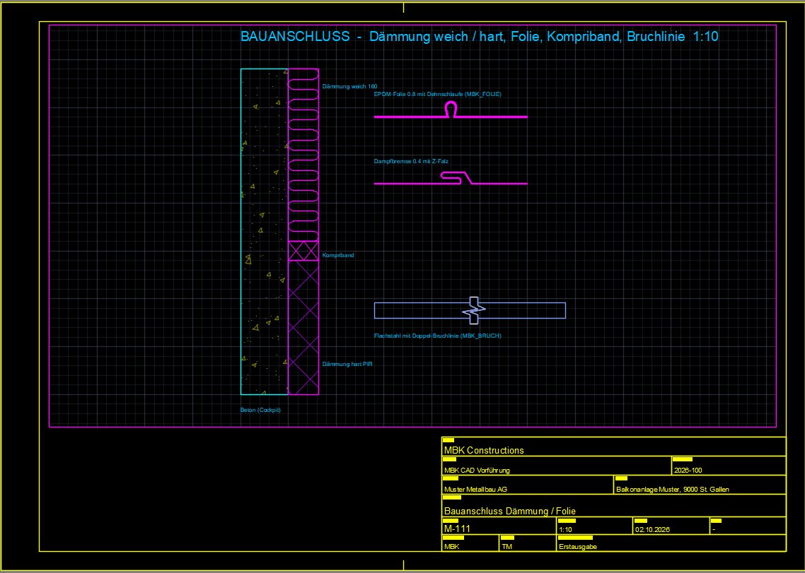
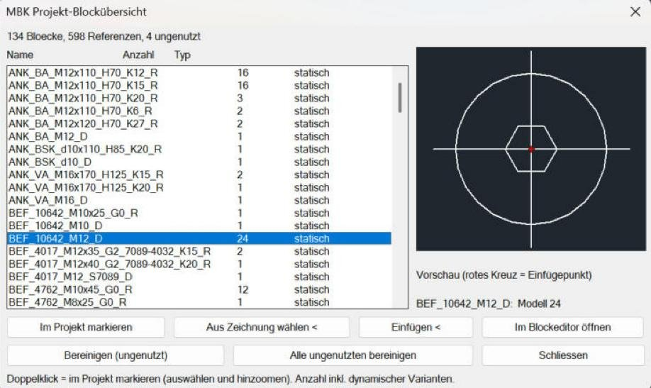

Funktionen
Die Editoren von MBKCAD
Zehn Werkzeuge, die im Metallbau-Alltag die meiste Zeit sparen – je ein Bild direkt aus dem Programm und das Wichtigste in Kürze. Bild anklicken = gross.
01
BMagic – Profile aus dem Katalog
MBK Einfügen › Normteile › Profile · MBK_BMAGIC
- Über 200 Normprofile: IPE, HEA, HEB, HEM, UNP, UPE, Winkel, T, Rohre, Flach- und Vierkantstahl
- Ansichten per Klick: Draufsicht, Seitenansichten und Querschnitt – mit sichtbaren und verdeckten Kanten
- Werkstoff Stahl, Chromstahl oder Alu; Richtung und Länge über zwei Punkte
- Jedes Teil bekommt automatisch eine Position, z.B. «HEB 200 P2»
- Die Stahlliste rechnet Stück, Länge, kg/m und Gewicht

02
BefBlo – Schrauben, Anker, Bohrungen
MBK Einfügen › Normteile › Verbindungselemente · BEFBLO
- Sechskant-, Zylinder- und Senkschrauben, SB- und HV-Garnituren mit Muttern und Scheiben
- Bolzen- und Verbundanker, Betonschrauben, Holz- und Bohrschrauben, Niete und Bohrungen
- Schraubenlänge auf Wunsch automatisch aus der Klemmdicke
- Ansicht per Klick um die Vorschau wählen: Kopf links, rechts, oben, unten oder Draufsicht
- Dynamische Blöcke rasten auf Lagerlängen ein; die Schraubenliste kommt als Tabelle und CSV

03
Treppen-Assistent
MBK Einfügen › Metallbau › Treppe · TREPPE
- Wangen-, Einholm-, Mehrholm- und Faltwerktreppe – Schritt für Schritt mit Vorschau
- Antritt und Austritt im Plan abgreifen: Höhe und Länge kommen direkt aus der Zeichnung
- Steigungen automatisch nach 2s + a, Stufen aus Blech oder Gitterrost, Auflagerplatten mit Lochbild
- Prüfung auf jeder Seite rot / grün, orientiert an BFU 2.007, SIA 358 und SIA 500
- Zeichnet Seitenansicht, Grundriss, Plattendetails, Legende und Stückliste

04
Geländer-Assistent
MBK Start › Ändern · GELAENDER
- Staketen, Traversen, Lochblech- oder Glasfüllung
- Basislinie abgreifen: Boden, Podest oder Treppenlauf
- Pfostenteilung, Gehrungen an Knicken und Stösse werden automatisch konstruiert
- Befestigung mit Fussplatte, Stirnplatte, einbetoniert oder angeschweisst – mit Lochbild
- Prüfung rot / grün, orientiert an BFU 2.003 und SIA 358; eigene Standards als Vorlage speichern

05
BQuick – Blechquerschnitt und Folien
MBK Start › Ändern · BQUICK
- Kantteil per Klickpfad: Punkte anklicken, Enter – fertig ist der Querschnitt
- Dicke, Innenradius und Materialseite wählbar, Falz als Option
- Biegefaktor nach DIN 6935 wird im Dialog angezeigt, neutrale Faser auf Wunsch eingezeichnet
- Auch als Folie: dampfdicht oder wasserdicht, auf dem passenden Layer

06
BLEDIT – Blech-Editor mit Abwicklung
MBK Einfügen › Normteile › BlEdit · BLEDIT
- Vorhandenes Blech wählen oder die Schenkel in der Tabelle bearbeiten
- Abwicklung mit Biegelinien, gestreckter Länge und Gewicht
- Laser-Freistiche an den Innenecken: Bohrung, Radius oder 45°-Schräge
- Einpressmuttern, Einpressbolzen und Schweissbolzen M3–M10
- Fertigungsstempel mit allen Daten für die Werkstatt

07
Stahlbau-Anschlüsse
MBK Einfügen › Metallbau › Anschlüsse · STAHLBAU
- Alle Anschlüsse in einem Dialog mit Vorschau – im Plan nur noch Punkte oder Kanten anklicken
- Gehrung auf der Winkelhalbierenden, mit Schweissspalt
- Ausklinkung mit Vorschlag aus dem Hauptträgerprofil und Eckenfreistich
- Kopf- und Fussplatten mit Lochbild, Steifen und Knotenbleche mit Freistich
- Rohr an Rohr ausklinken, mit Abwicklung als Brennschablone

08
Schweissnaht
MBK Einfügen › Metallbau › Schweissnaht · SCHWEISS
- Symbole orientiert an ISO 2553 (System A, wie im Zeichnungslehrgang)
- Kehl-, I-, V-, HV-, Y-, U-, J-, Bördel- und Lochnaht – Pfeilseite, Gegenseite oder beidseitig
- Dicke, Länge, ringsum, Baustellennaht, Oberfläche und Verfahren
- Naht im Schnitt und Naht in der Ansicht als Strichreihe entlang Linie, Bogen oder Kreis
- Bedeutung in Worten unter der Vorschau; vorhandene Nähte lassen sich wieder bearbeiten

09
Bauanschluss
MBK Einfügen › Metallbau › Bauanschluss · MBK_DAEMMUNG · MBK_FOLIE · MBK_KOMPRIBAND
- Weichdämmung als Ziehharmonika, Hartschaum (PIR / XPS) mit Kreuzschraffur
- Dichtfolie EPDM oder Dampfbremse entlang angeklickter Punkte
- Dehnschlaufen und Kleberaupen an der Folie
- Kompriband mit Rautenfüllung zwischen zwei Kanten

10
Blockmanager
MBK Start › Block › Blockmanager · MBK_BLOECKE
- Alle Blöcke der Zeichnung mit Anzahl und Typ – auch dynamische Varianten
- Vorschau mit Einfügepunkt und Verwendung je Bereich (z.B. Modell 24)
- «Im Projekt markieren»: alle Vorkommen werden gewählt, hingezoomt und eingekreist
- Einfügen, aus der Zeichnung wählen oder im Blockeditor öffnen
- Nicht verwendete Blöcke bereinigen

!
Orientiert an Normen, ohne Gewähr. Wo ein Editor eine Norm nennt, richtet er sich danach – die Werte sind eine Hilfe und können Fehler enthalten. Pläne vor der Fertigung selbst prüfen. Mehr dazu · Fehler melden